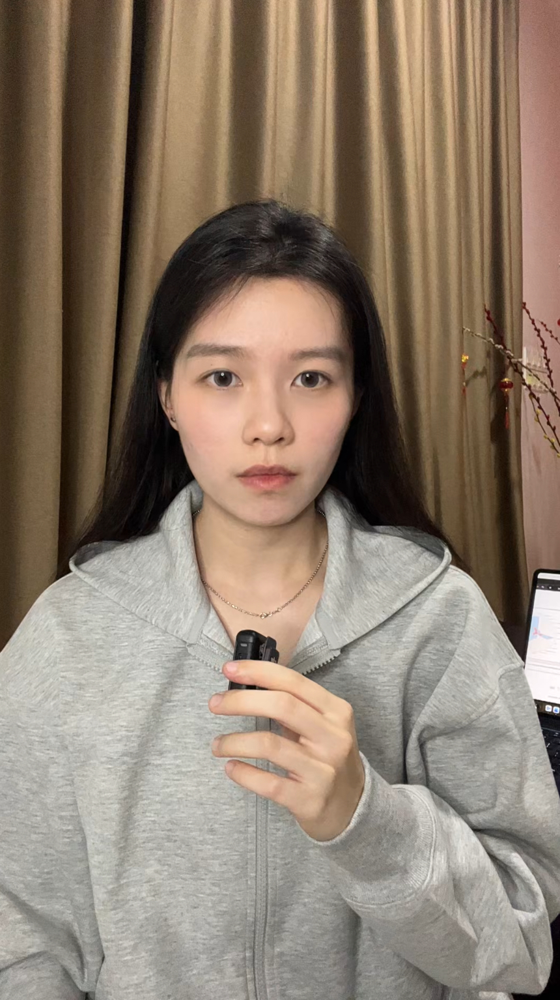
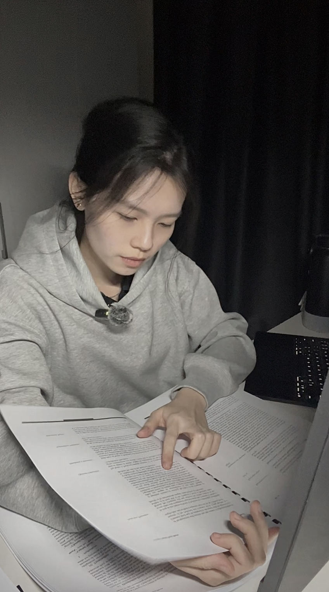
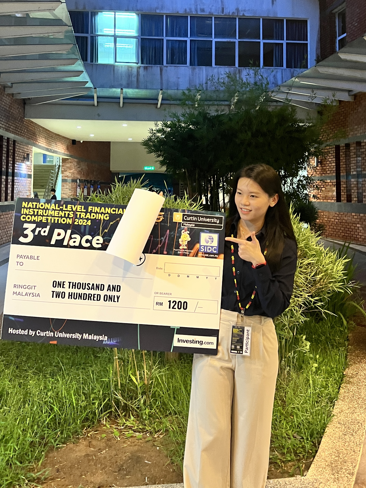

Li Yin
Start Here
Most students think they're learning.
They're not.
They're just getting better
at playing a game that doesn't matter.
They're not.
They're just getting better
at playing a game that doesn't matter.
So I started building outside it.



Why
I don't want to graduate with a degree and no judgment.
So I'm learning what classrooms rarely teach.
How money actually moves.
How decisions actually get made.
And how AI changes both.
Who I am
I'm not an expert.
I'm not here to teach.
I'm a finance student trying to think clearly —
in a system that rewards memorization.
How
I test ideas with AI.
I break down what I don't understand.
I keep what survives contact with reality.
Everything else gets discarded.


What for
Most students optimize for grades.
I'm optimizing for judgment.
Not to sound smart.
To actually understand what is going on.
It was never about grades.
It was never about looking busy.
It was about
who understood what was actually going on.
Start here: